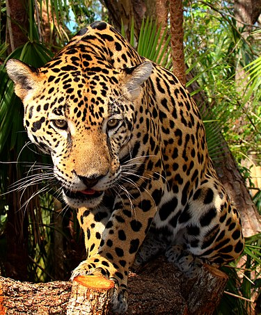

Panthera onca
Jaguar, yaguar o yaguareté
Es un carnívoro félido de la subfamilia de los Panterinos y género Panthera. Es la única de las cinco especies actuales de este género que se encuentra en América. También es el mayor félido de América y el tercero del mundo, después del tigre (Panthera tigris) y el león (Panthera leo). Su distribución actual se extiende desde el extremo sur de Estados Unidos continuando por gran parte de México, América Central y América del Sur hasta el norte y noreste de Argentina
